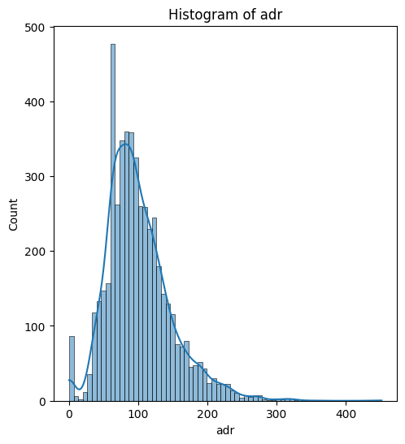
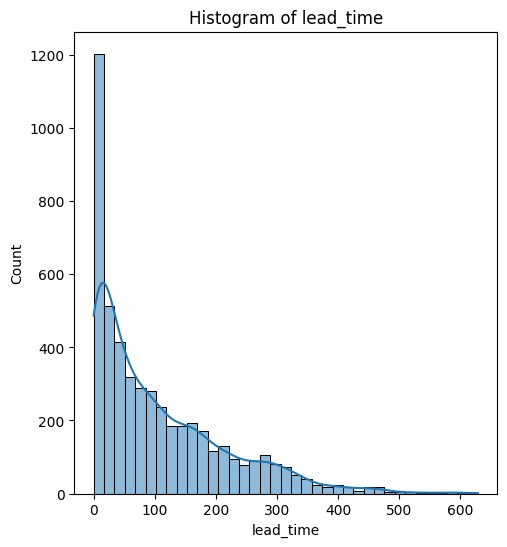
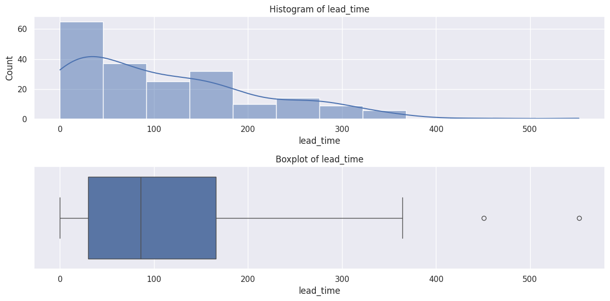
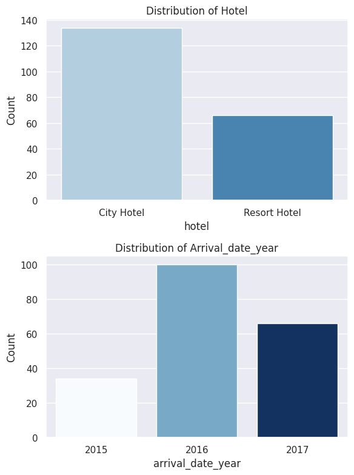
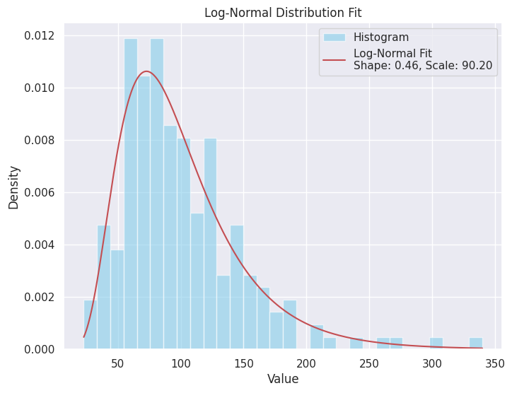
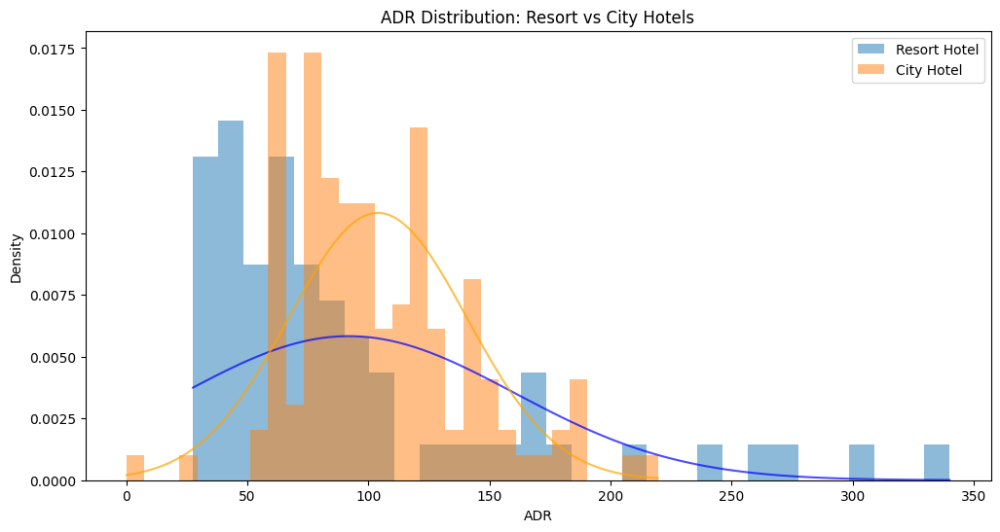
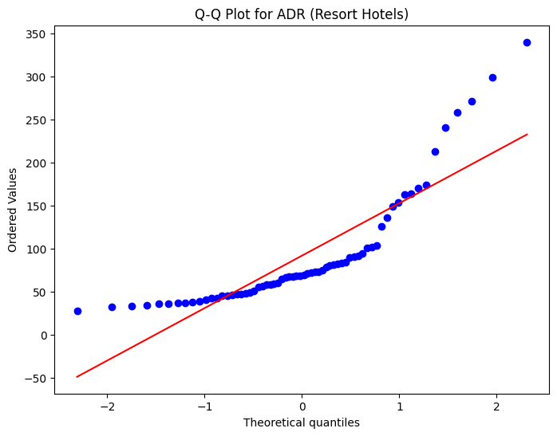
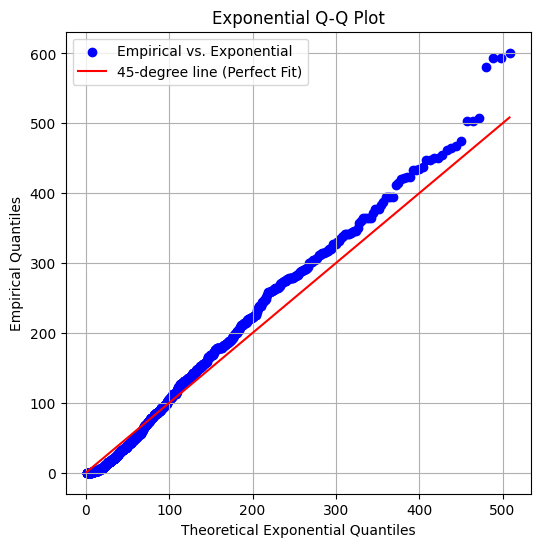

A five-project arc through the Statistics 2 syllabus — estimators & MLE, confidence intervals, hypothesis testing, linear regression, the bootstrap and Bayesian inference — all applied to one consistent real dataset of 5,000 hotel bookings (sampled with seed 42).
The course (based on Wasserman's All of Statistics) covers statistical models, estimators, MLE, confidence intervals, hypothesis testing, linear regression, variance decomposition, relative risk / odds ratios, logistic & Poisson regression, the bootstrap, permutation tests, the Bayesian approach, Monte-Carlo simulation, and missing-data methods.
The repo contains 6 graded homeworks and 5 project notebooks that build on each other. Rather than touching every topic on a toy example, the projects carry a single dataset all the way from exploratory description (Project 3) through estimation/testing (Projects 2–4) to Bayesian and missing-data analysis (Project 5).
MLE for the chosen variables, asymptotic normality of the estimator, Wald & t-tests, λ likelihood-ratio test, and a simulation study of Wald-test p-value behavior across sample sizes.
Multiple linear regression of adr on lead time, hotel type and arrival year; F-test, t-tests on coefficients, residual/linearity diagnostics, and an interaction model compared by LRT & AIC.
Bootstrap CIs (pivot & percentile) for regression coefficients vs the normal approximation, then a Bayesian Beta–Binomial analysis and missing-data protocols.
From the project notebooks: the Hotel Booking Dataset covers two hotel types (City & Resort). The projects randomly sample 5,000 rows (seed 42) and focus on a fixed set of variables.
| adr | average daily rate (the response variable) |
| lead_time | days between booking and arrival |
| arrival_date_year | 2015 / 2016 / 2017 |
| hotel | Resort Hotel vs City Hotel |
| is_repeated_guest | guest rebooked the hotel |
Stated verbatim in Project 1:
1 · If lead_time increases, does adr decrease?
2 · The influence of lead_time, hotel and arrival year on adr.
Both adr and lead_time are strongly right-skewed (long upper tails, outliers) — a recurring point in the notebooks that motivates log-normal fits, Q-Q checks and caution about t-test normality assumptions.
MLE per category (the mean), shown asymptotically normal. Q1 finds the adr and lead_time confidence intervals do not overlap. Q2 tests H₀: lead_avg = adr_avg against a two-sided alternative using both a Wald test and a t-test.
Q2(B) explicitly notes the t-test assumptions aren't all met (lead_time is non-normal from the Project 1 histogram). Q3 runs a simulation: Wald p-values cluster around 0.5 under H₀ (mean ≈ 0.508 for lead_time, 0.427 for adr at n = 30).
Test H₀: μ₁ = μ₂ from two sample means and standard errors, exactly as in Q2. Defaults give a borderline-significant case; drag the sliders to see when the verdict flips.
Wald statistic W = (x̄₁ − x̄₂) / √(se₁² + se₂²), two-sided p = 2(1 − Φ(|W|)).
Regresses adr on lead_time, hotel_encoded and arrival year, with full EDA (symmetry, outliers, distribution fits), F-test, coefficient t-tests and a linearity check.
| Coefficient | Estimate | Interpretation (from notebook) |
|---|---|---|
| lead_time | -0.0487 | each extra day's lead time → adr down ~$0.05 (early-booking discounts) |
| hotel_encoded | -13.9205 | Resort (1) vs City (0): ~$13.9 lower adr on average |
Part B — an interaction model is compared to the base model. The Likelihood-Ratio Test statistic 9.91 exceeds the critical 7.81 (reject H₀: interactions add nothing), and AIC is lower (−114.38 vs −113.31), so the interaction model is preferred.
Builds CIs for each regression coefficient β four ways and compares them:
| Section | Method |
|---|---|
| 1.a | Normal approximation — s.e. from the estimated β covariance matrix |
| 1.b | Normal approximation — s.e. estimated by bootstrap |
| 1.c | Bootstrap pivot interval |
| 1.d | Bootstrap percentile interval |
Notebook conclusion: the pivot and percentile methods yield the same interval length for every coefficient — expected, since both derive their width from the same bootstrap quantiles. The CIs are then checked against the CI computed on all 5,000 rows.
Part 1 (Bayesian): tests H₀: adr₀ = adr₁ across the two hotel types using a Beta–Binomial model. Because of the Beta–Binomial conjugacy property, the posterior is Beta in every section; three estimators are compared and the first two agree (similar priors barely move the result).
Part 2 (missing data): works through missing-data mechanisms and completion protocols on the same dataset (Sections 1–5 with sub-parts).
# conjugacy: Beta prior + Binomial likelihood → Beta posterior posterior = Beta(α + clicks, β + (n - clicks))
Real figures rendered by the project notebooks (extracted from the committed .ipynb outputs).







